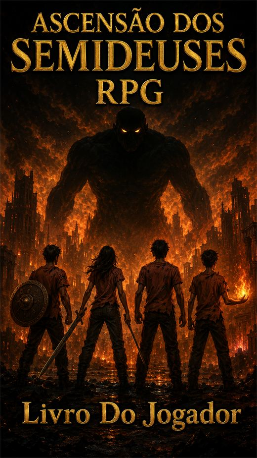
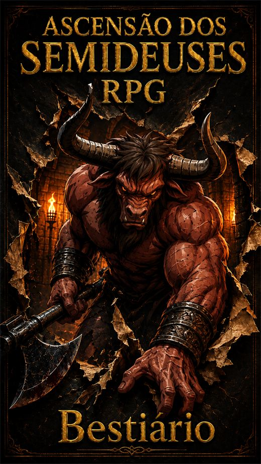
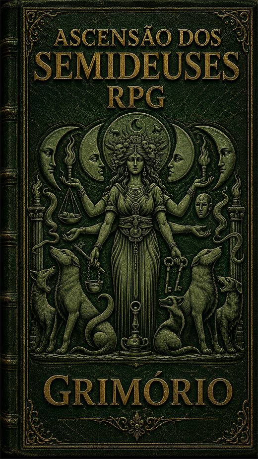
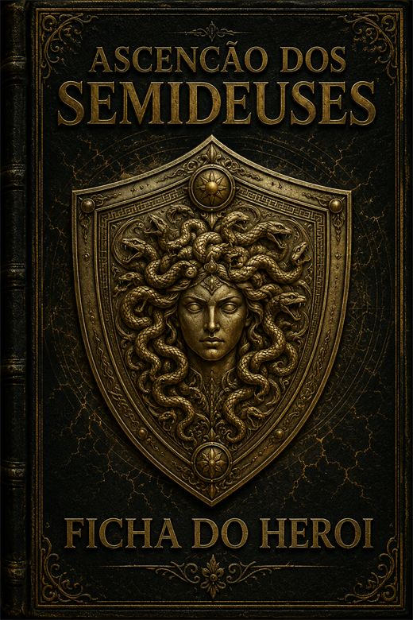

A Ascensão dos Semideuses
RPG de mesa
Você descobriu tarde demais que um dos seus pais não era humano. O mundo já sabia. Os monstros também.

Livro I
Livro do Jogador
Tudo que você precisa para começar a jogar: o d20, criação de personagem em sete etapas, combate, e o motor completo de criação de habilidades.
Abrir o livro →
Livro II
Bestiário
Para o Mestre. A Escala de Kleos — onze degraus de Rumor a Cataclisma —, o motor de criação de monstros, e 38 criaturas do sátiro errante a Tifão.
Abrir o livro →
Livro III
Grimório
A Magia da Névoa. Qualquer um pode aprender — mas tudo que você cria pode ser desfeito por quem se recusar a acreditar.
Abrir o livro →
Livro IV
Ficha do Herói
Preenche na tela, aceita o retrato do seu personagem e sai em PDF. Não guarda nada: você preenche, baixa e leva.
Abrir a ficha →Como este sistema é feito
Nenhum número entra no livro sem passar por um simulador. Ele calcula a probabilidade exata do d20 e roda milhares de combates completos para medir se uma escolha é de verdade — se a técnica que parece boa é sempre a certa, se a classe defensiva realmente aguenta mais, se o desgaste de uma sequência de brigas acumula.
Ele já me contrariou três vezes, e as três estão documentadas: a combinação Ataque Feroz mais Ataque Pesado não tinha conserto numérico, bandos de inimigos fracos valem menos que a soma e não mais, e quem gasta mana compra escolha, não dano bruto.